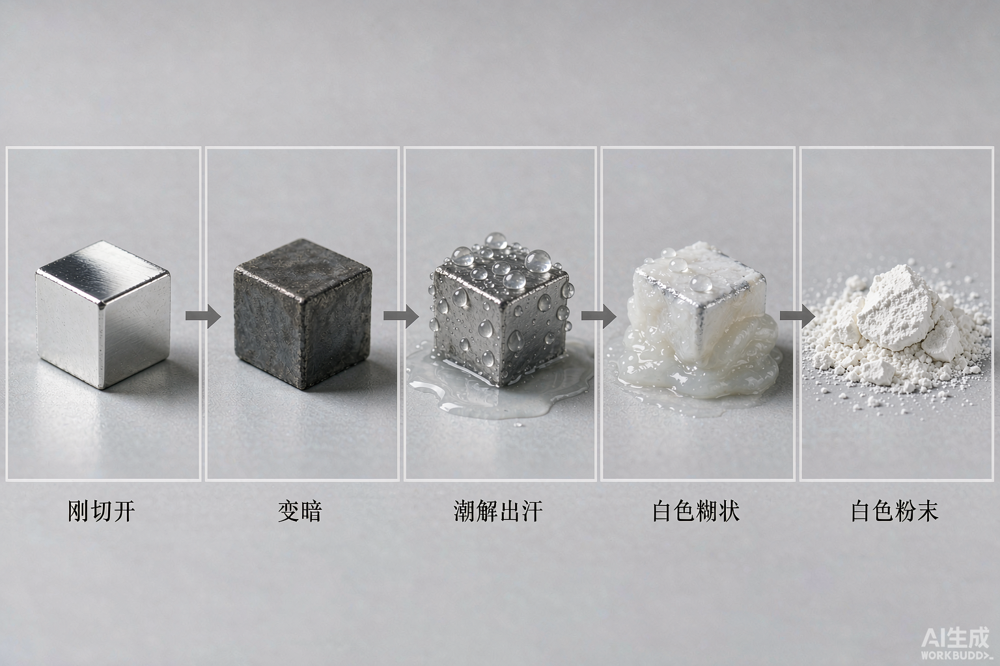
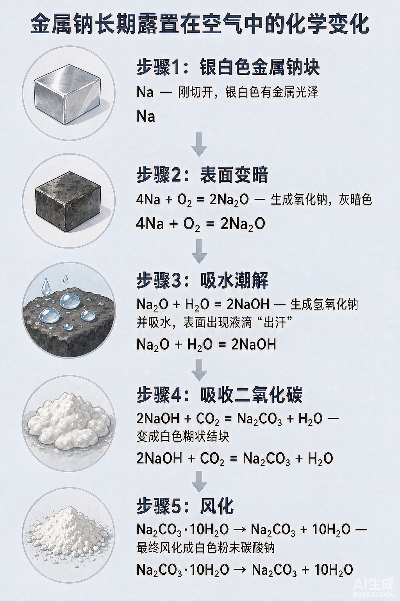

① 过氧化钠的补充 19班
颜色状态：淡黄色固体（牢记！Na₂O 是白色，别混）
氧元素价态：-1 价，介于 0 和 -2 之间 → 既有氧化性又有还原性
用途①：供氧剂 —— 呼吸面具、潜水艇里"人呼出的 CO₂ 和水蒸气能变出 O₂"
用途②：强氧化性 → 漂白（漂白织物、羽毛等）
💧 两个核心反应 —— 先猜现象，再点按钮看答案
2Na2O2 + 2H2O ＝ 4NaOH + O2↑
产生气泡（O₂），溶液先变红、后褪色。
变红：生成 NaOH 显碱性；褪色：Na₂O₂ 的强氧化性（漂白性）把酚酞氧化破坏。
易错不能只答"变红"，别忘了褪色！
变红：生成 NaOH 显碱性；褪色：Na₂O₂ 的强氧化性（漂白性）把酚酞氧化破坏。
易错不能只答"变红"，别忘了褪色！
2Na2O2 + 2CO2 ＝ 2Na2CO3 + O2
淡黄色固体逐渐变为白色，并产生能使带火星木条复燃的气体。
这就是潜水艇、消防呼吸面具中的供氧反应。
这就是潜水艇、消防呼吸面具中的供氧反应。
🌉 双线桥 · 电子转移分析（歧化反应）
两个反应中 Na₂O₂ 里的氧（-1 价）一部分升到 0 价、一部分降到 -2 价 —— 同一物质既是氧化剂又是还原剂，这叫歧化反应。点击按钮画出双线桥：
📌 记量关系：每 1 mol Na₂O₂ 完全反应，转移 1 mol 电子。
⚖️ 两个常考"陷阱"反应
Na₂O₂ + H₂O →（通入 CO₂ 气体 vs 投入水中）…… 判断气体体积时先写方程式再算比例
例：足量 Na₂O₂ 分别与 1 mol CO₂、1 mol H₂O（气）反应，生成 O₂ 各为
由方程式系数：2Na₂O₂ ~ O₂ ~ 2CO₂ ~ 2H₂O，所以 1 mol CO₂ 生成 0.5 mol O₂；1 mol 水蒸气同样生成 0.5 mol O₂。
巧记按"氧原子守恒"：Na₂O₂ 只贡献一半的 O₂。
巧记按"氧原子守恒"：Na₂O₂ 只贡献一半的 O₂。
② 碳酸钠饱和溶液中通入足量 CO₂
🧪 实验情境
向 饱和 Na₂CO₃ 溶液中持续通入足量 CO₂ 气体，观察到什么现象？
有白色（晶体）析出，溶液变浑浊。
Na2CO3 + CO2 + H2O ＝ 2NaHCO3↓
易错不能答"无明显现象"，更不能答"产生气泡消失"这种含糊说法。
🔍 为什么会析出晶体？三个原因一个都不能少
① 溶解度变小：同温度下 NaHCO₃ 的溶解度 小于 Na₂CO₃
② 溶剂减少：反应消耗了 H₂O
③ 溶质增多：每 106 份 Na₂CO₃ 转化为 168 份 NaHCO₃，溶质质量变大
📌 三条原因共同作用，饱和溶液"装不下了"，NaHCO₃ 以晶体形式析出。
❓ 随堂练：相同温度下，下列物质溶解度由大到小排列正确的是
✅ B。Na₂CO₃ 溶解度明显大于 NaHCO₃，这正是饱和 Na₂CO₃ 溶液通 CO₂ 会析出晶体的原因之一。
③ 侯氏制碱法（联合制碱法）
🧑🔬 人物名片
侯德榜：我国著名化学家。1943 年他改进索尔维制碱法，创立"联合制碱法"，把制碱与合成氨工业联合起来，打破了国外的技术垄断，被命名为"侯氏制碱法"。
🏭 生产流程（先向饱和食盐水中通什么？）
饱和食盐水NaCl 溶液
→
先通 NH₃
再通足量 CO₂
再通足量 CO₂
→
析出 NaHCO₃ 晶体
过滤
过滤
→
加热分解
得到纯碱 Na₂CO₃
得到纯碱 Na₂CO₃
NaCl + NH3 + CO2 + H2O ＝ NaHCO3↓ + NH4Cl
2NaHCO3 —Δ→ Na2CO3 + H2O + CO2↑
💡 为什么先通 NH₃ 后通 CO₂？
NH₃ 极易溶于水，先通 NH₃ 使溶液呈碱性；碱性溶液能大量吸收 CO₂（CO₂ 溶解度小），生成更多 HCO₃⁻，有利于 NaHCO₃ 达到饱和而析出。若先通 CO₂，因溶解度小，吸收量太少，产量低。
🌟 侯氏制碱法的三大优点（对比索尔维法）
① 副产品有价值：母液中加 NaCl 降温析出 NH₄Cl，作氮肥，不再产生大量 CaCl₂ 废渣
② 原料利用率高：NaCl 母液循环利用，利用率提高到 96% 以上
③ 与合成氨联合：CO₂ 来自合成氨厂的废气，变废为宝，不需煅烧石灰石
④ Na₂CO₃ 与 NaHCO₃ · 用途 / 转化 / 鉴别
📋 性质对比（鼠标划过表格行）
| Na₂CO₃（纯碱/苏打） | NaHCO₃（小苏打） | |
|---|---|---|
| 溶解度 | 较大 | 较小 |
| 热稳定性 | 稳定（受热不分解） | 受热易分解 |
| 与盐酸反应 | 分步放气，较慢 | 一步放气，剧烈 |
| 同浓度滴酚酞 | 红色较深（碱性较强） | 浅红色 |
| 主要用途 | 玻璃、造纸、纺织、洗涤剂 | 发酵粉、灭火器、治疗胃酸过多 |
🔄 相互转化（点击箭头）
Na₂CO₃
NaHCO₃
正向（→）：Na₂CO₃ + CO₂ + H₂O ＝ 2NaHCO₃
逆向（←）：① 2NaHCO₃ —Δ→ Na₂CO₃ + H₂O + CO₂↑ ② NaHCO₃ + NaOH ＝ Na₂CO₃ + H₂O
口诀正盐"加水加气"变酸式盐；酸式盐"加热或加碱"变正盐。
逆向（←）：① 2NaHCO₃ —Δ→ Na₂CO₃ + H₂O + CO₂↑ ② NaHCO₃ + NaOH ＝ Na₂CO₃ + H₂O
口诀正盐"加水加气"变酸式盐；酸式盐"加热或加碱"变正盐。
🔎 鉴别方法大讨论（点击卡片展开能否鉴别及原因）
① 加热固体
✔ 可鉴别：有气体（使澄清石灰水变浑浊）的是 NaHCO₃；Na₂CO₃ 受热不分解。
② 加 CaCl₂ / BaCl₂ 溶液
✔ 可鉴别：产生白色沉淀的是 Na₂CO₃（CaCO₃↓）；NaHCO₃ 与 CaCl₂ 不反应。
③ 同浓度溶液滴酚酞
✔ 可鉴别：红色更深的是 Na₂CO₃（水解程度大、碱性强）。
④ 分别滴入同浓度稀盐酸
✔ 可鉴别：把盐酸逐滴加入两种同浓度溶液，立即产生气泡的是 NaHCO₃；Na₂CO₃ 先反应不生气泡（CO₃²⁻→HCO₃⁻），稍后才冒泡。
⑤ 加 NaOH 溶液
✘ 不可鉴别：NaHCO₃ 与 NaOH 反应但无现象，Na₂CO₃ 也不反应，两者都无明显变化。
⑥ 加澄清石灰水
✘ 不可鉴别：二者都产生 CaCO₃ 白色沉淀，现象相同。
🧹 除杂专练
① Na₂CO₃ 固体中混有少量 NaHCO₃，如何除去？
加热（灼烧）：2NaHCO₃ —Δ→ Na₂CO₃ + H₂O + CO₂↑，杂质分解为目标物，不引入新杂质。
② NaHCO₃ 溶液中混有少量 Na₂CO₃，如何除去？
向溶液中通入足量 CO₂：Na₂CO₃ + CO₂ + H₂O ＝ 2NaHCO₃，杂质变目标物。
⑤ 一小块钠长期露置在空气中的变化
⏳ 五幕"连续剧" —— 点击进度条逐步观看
银白色金属钠 —— 刚用镊子取出、切开的钠块，切面呈银白色，有金属光泽。

图片来源：AI 生成（WorkBuddy） AI生成
📖 对应的反应原理
① 表面变暗（被氧气氧化）：
4Na + O2 ＝ 2Na2O（常温）
4Na + O2 ＝ 2Na2O（常温）
② 吸水潮解、表面"出汗"：
Na2O + H2O ＝ 2NaOH，NaOH 吸水潮解形成溶液
Na2O + H2O ＝ 2NaOH，NaOH 吸水潮解形成溶液
③ 吸收 CO₂ 结块：
2NaOH + CO2 ＝ Na2CO3 + H2O
2NaOH + CO2 ＝ Na2CO3 + H2O
④ 风化为白色粉末：
Na2CO3·10H2O →（风化）→ Na2CO3（粉末）
Na2CO3·10H2O →（风化）→ Na2CO3（粉末）
📌 最终产物是 Na₂CO₃（白色粉末），不是 NaOH，也不是 Na₂CO₃·10H₂O。
📊 全流程原理图

图片来源：AI 生成（WorkBuddy） AI生成
⑥ 钠相关物质的转化网络（点击箭头看方程式）
👆 操作提示：点击任意一条箭头（或箭头旁的文字），这里会显示对应的化学方程式。
🏆 综合挑战（单选题，点击选项即刻判分）
1. 下列关于 Na₂O₂ 的说法正确的是
✅ C。A 错：Na₂O₂ 是淡黄色固体，且既作氧化剂又作还原剂；B 错：1 mol Na₂O₂ 只转移 1 mol 电子；D 错：氧是 -1 价。
2. 向饱和 Na₂CO₃ 溶液中通入足量 CO₂，现象是
✅ A。生成溶解度更小的 NaHCO₃，且消耗水、溶质增多，故析出晶体。
3. 只用一种试剂（必要时加热）就能鉴别 Na₂CO₃ 与 NaHCO₃ 两种白色固体的是
✅ C。NaHCO₃ 受热分解放出 CO₂；NaOH、石灰水与两者都无差别现象；两者都溶于水。
4. 侯氏制碱法中，向饱和食盐水中通入气体的正确顺序是
✅ D。NH₃ 极易溶，先通 NH₃ 使溶液呈碱性，才能高效吸收溶解度小的 CO₂。
5. 一小块金属钠长期露置在空气中，最终产物是
✅ C。变化链：Na → Na₂O → NaOH（潮解）→ Na₂CO₃ → 风化为无水 Na₂CO₃ 白色粉末。